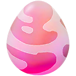
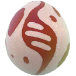
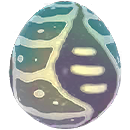
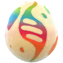

Incursiones
Las incursiones son combates en los cuales varios entrenadores luchan juntos contra un Pokémon de gran poder el cual es el jefe de incursión para luego tener la oportunidad de capturarlo.
Incursiones
Mecánica
Como ya comente al inicio de esta guía las incursiones son combates que hacemos con varios entrenadores para vencer a un jefe de incursión pero aparte de eso hay que comentar un par de cosas más:
Gimnasios: Los lugares donde surgen las incursiones siempre son los gimnasios y apareceran de manera aleatoria excepto por eventos de incursiones, aunque hay un tipo especial de incursión que son las EX que solo estan disponibles en unos pocos gimnasios de la zona y con hora establecida.
Duración: Las incursiones se dividen en dos fases, una que es la de incubación que es previa a poder enfrentar al jefe donde sale un huevo con la dificultad del Pokémon durante 1 hora como aviso de que va a haber una incursión en ese gimnasio y la fase de combate donde ya puedes enfrentarte al jefe siempre que tengas pases de incursión y esta fase durara 45 minutos.
Ahora vamos a aclarar otros puntos que van aparte de los puestos arriba:
Niveles de Dificultad
La dificultad de las incursiones varía dependiendo de forma aleatoria siendo la más facil de 1 estrella y la más díficil de 6 estrellas aunque estas últimas son especificas para megaincursiones legendarias.
La cantidad de jugadores necesarios para hacer las incursiones varia dependiendo de la dificultad de la misma siendo lo más normal cuando ya estas ren un nivel alto y con Pokémon bien subidos(nivel 35 para arriba) poder pasar hasta incursiones de 3 estrellas solo pero siempre es mejor ir acompañado de varias personas para las de mayor dificultad a esa.
Combate
Antes del combate hay una pantalla de 120 segundos donde los jugadores que participan en la incursión pueden preparar sus Pokémon, invitar a otros amigos a la incursión o si ya esta listo darle a listo y si los otros jugadores también lo estan la batalla comienza en 20 segundos.
Cuando la batalla comienza, tu junto con tus compañeros tienen 300 segundos o 5 minutos para derrotar al jefe, sino la batalla se da por perdida, el daño que recibe el jefe se calcula tomando en cuenta el daño inflinjido por todos los jugadores y haciendo un extra si los jugadores tienen buena amistad en el juego, cuando mayor sea, mayor daño hacen
PreCaptura
Si se derrota al jefe con exito luego aparece una pantalla donde se ven los destacados de la incursión como el que más daño hizo o el que dió el golpe de gracia y se calculan las Honor Ball que te daran como intentos para capturar al jefe de incursión.
Captura
Después de darle a capturar estaras en modo de captura con el jefe de incursión ahí y con las Honor Ball que te dieron al finalizar la incursión, los Pokémon de incursión salen con un mínimo de 10 IVs en cada estadistica, es decir, 30 IVs de Mínimo y 45 Ivs de máximo
Huevos
| Huevo de incursiones de nivel 1 | Huevo de incursiones de nivel 3 | Huevo de incursiones de nivel 4 | Huevo de incursiones de nivel 5 y EX |
|---|---|---|---|
 |
|||
| Huevo de incursiones Élite | Huevo de megaincursiones | Huevo de megaincursiones legendarias | Huevo de incursión primigenia |
 |
 |
||
| Ultraumbral de ultraincursión | Huevo de supermegaIncursión | Huevo de supermegaIncursión legendaria | |
 |
 |
Incursiones especiales
Incursiones EX
Los combates de incursión EX solo se pueden hacer a través de un pase EX el cual solo se le da a los jugadores que hayan ganado una incursión en el gimnasio donde se celebrara la incursión, este es un pase diferente al resto ya que este dice claramente la fecha y la hora de la incursión y no aparece aleatoriamente como el resto.
Incursiones Remotas
Las incursiones son iguales que las normales con el pequeño cambio de que se pueden hacer a distancia, con un pase de incursión remota puedes ir a una incursión que aparezca en algún gimnasio que puedas ver o al que un amigo te haya invitado aunque con un máximo de 10 por día.
Incursiones Élite
Las incursiones son diferentes al resto, en estas incursiones el tiempo de incubación del huevo es de 18 a 24 horas y cuando eclosionando solo se tiene 30 minutos para participar en la incursión y en estas hay que estar presencial obligatoriamente. Aparte de la incursión también esta el hecho de que mientras dure la incursión algunos pokémon raros como Articuno podran aparecer en estado salvaje.
Incursiones Oscuras
En estas incursiones miembros del Team Go Rocket invaden los gimnasios y en de los huevos de incursión eclosionaran Pokémon oscuros ademas que en incursiones de nivel 3 o 5 los Jefes se enfadaran al llegar a un porcentaje de vida aumentando su ataque y defensa y teniendo que darles Gemas Purificadas para nerfear el efecto del enfado.
Megaincursiones
Estas incursiones son diferentes al resto, en estas no se vence al jefe para capturarlo sino para conseguir megaenergía del Pokémon megaevolucionado de la incursión y así poder megaevolucionarlo tu mismo cuando tengas suficiente megaenergía.
Incursiones Primigenias
Estas incursiones son practicamente iguales a las megaincursiones solo que aqui solo apareceran Kyogre primigenio y Groudon primigenio.
Supermegaincursiones
Las supermegaincursiones son muy parecidas a las megaincursiones con la diferencia de que esta si el Pokémon se enfada se pone un escudo dependiendo del Pokémon que sea.